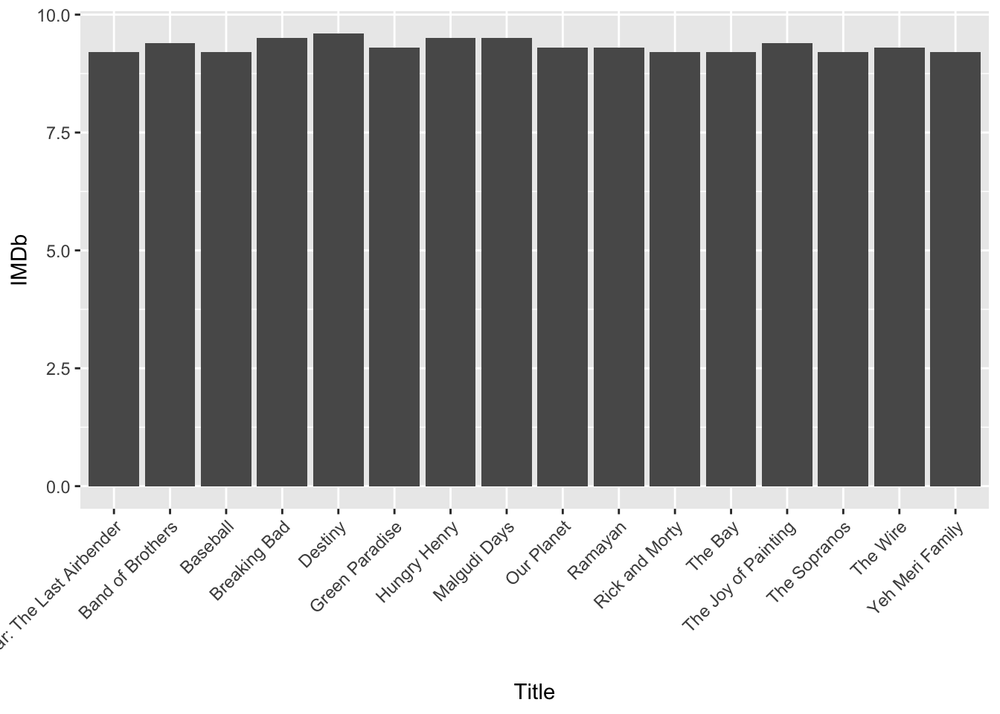

4 Technical Definitions & Rules
4.1 Important R Programming Definitions
Read through these now to get familiar and refer back to these whenever you need a refresher. You’re not expected to have these memorized or even understood at this moment. These will make more sense as we progress through the course.
| Coding Name | Example | Definition |
|---|---|---|
| syntax | R code | the nomenclature and structure of a programming language |
| debugging | Failed R run | debugging involves fixing R code that is written incorrectly and doesn’t run |
| variable | names |
Variables are used to store data, whose value can be changed according to our need. Variables can be declared using <- (tradiational way) or by = (conventional way) |
| package | library(ggplot2) |
A collection of functions prewritten in R |
| function | print() |
A function is a set of statements organized together to perform a specific task. R has a set of preloaded functions that are part of the base package. If a function cannot be found as part of the base package, the function has likely already been built under another package that needs to be loaded in. Functions can be identified due to their enclosing parantheses () |
| arguments | read.csv(file = "datasets/tv_shows.csv", header = FALSE) |
Components of a function that are separated by commas and declared using the = sign. Arguments in this example are file = and header = |
| index | tv_data[3,55] |
The position of data within a data frame, matrix, list, vector, etc. In R, data is indexed as [row,column] and indexing is done via brackets [] |
| loop | for (n in names){print(n)} |
Repeats a task for a specified number of times. Saves a programmer from repeating codelines with different parameters. |
| logical | TRUE, FALSE |
TRUE and FALSE logical operators are declared using all caps |
| arithmetic operators | +,-,*,/,^ |
Math operators used for addition, subtraction, multiplication, division, exponent, respectively. |
| comparison operators | ==, <, >, <=, >=, != |
Is equal to, less than, greater than, less than or equal to, greater than or equal to, is NOT equal to, respectively |
| and/or operators | &, | |
AND, OR |
| string | a_string = "anythign within quotes, single or double" |
Any value written within a pair of single quote or double quotes in R is treated as a string. |
| numeric | 1 |
Any number - integer, float, etc. |
| vector | as.vector(x = c(1,2,3,4)) |
Vectors are the most basic R data objects and there are six types of atomic vectors. They are logical, integer, double, complex, character and raw. |
| lists | list('Peter', 'Sarah', 'Tom', 'Helen') |
Lists are the R objects which contain elements of different types like − numbers, strings, vectors and another list inside it |
| matrix | matrix(c(1:5), nrow = 3, byrow = TRUE) |
Matrices are the R objects in which the elements are arranged in a two-dimensional rectangular layout. |
| array | array(data = c(1,2,3)) |
Arrays are the R data objects which can store data in more than two dimensions. For example − If we create an array of dimension (1, 2, 3) then it creates 3 rectangular matrices each with 1 rows and 2 columns. Arrays can store only one data type. |
| data frame | data.frame(tv_data) |
R version of Excel Spreadsheet. A data frame is a table or a two-dimensional array-like structure in which each column contains values of one variable and each row contains one set of values from each column. |
| factor | factor() |
Factors are the data objects which are used to categorize the data and store it as levels. They can store both strings and integers. They are useful in the columns which have a limited number of unique values. Like “Male,”Female" and True, False etc. They are useful in data analysis for statistical modeling. |
| help | help(read.csv) |
Default helper function in R. Opens up documentation on a particular function in the lower right quadrant of R. |
| class | class(tv_data) |
Tells us what R is recognizing something as |
concatenate (c) |
c(“a”, “b”, “c”) | A quick utility for concatenating strings together |
| filepath | “/Users/james/Downloads/” | The location on your computer where a file is stored. A filepath with a leading slash (akak “/” ) is also referred to as root. Root is the furthest back you can go on your computer. Think of a filepath like this - “/Earth/UnitedStates/Pennsylvania/Lancaster/” |
4.2 Definitions in Action - TV Data Example
Now that we’re comfortable with R Studio and have some definitions under our belt, let’s dive in a little into some R code and discuss it. Here is a script that loads a dataset about TV shows and examines their IMDb rating. We downloaded this dataset already and can likely be found in your Downloads folder. You’ll need to unzip dataforge-master.zip. The file will be stored in dataforge-master/datasets/tv_shows.csv
First, let’s just show the script without running it.
# Load in the dataset using the read.csv() function
tv_data = read.csv(file = "/Users/james/Downloads/dataforge-master/datasets/tv_shows.csv", header = FALSE)
# have R tell us what class tv_data is
class(tv_data)
# find the number of rows
nrow(tv_data)
# print the top 5 rows of the dataset using the head() function
head(tv_data)
# another way to print out the first 5 rows
print(tv_data[1:5, ])
# print out the first 5 rows of the tv_data Title column
head(tv_data$Title)
# print out the first 5 rows of the tv_data Title Column
head(tv_data['Title'])
# print out the first 7 rows of the tv_data Title Column
print(tv_data['Title'][1:7,])
# sort the tv_data dataframe by the IMDb column from High values to Low values
sorted_tv_data = tv_data[order(tv_data$IMDb, decreasing = TRUE), ]
# print the top 5 rows of the dataset
head(sorted_tv_data)
# a column X is bugging me and shouldn't be there - let's NULL it out to remove it from our dataframe
sorted_tv_data$X = NULL
# print the first 10 rows of the sorted_tv_data column
print(sorted_tv_data[1:10,])
# Barplot the first 16 rows of tv data
ggplot(data = sorted_tv_data[1:16,], mapping = aes(x=Title, y=IMDb)) + geom_bar(stat = "identity") + theme(axis.text.x=element_text(angle=45, hjust=1))Now, let’s run the script. Note that this will run line by line, so below each snippet of code, R will execute the code. Remember, the code is executed in the console. R output is designated by the ##
library(ggplot2)
# Load in the dataset using the read.csv() function
tv_data = read.csv("/Users/james/Downloads/dataforge-master/datasets/tv_shows.csv")
# have R tell us what class tv_data is
class(tv_data)## [1] "data.frame"## X Title Year Age IMDb Rotten.Tomatoes Netflix Hulu Prime.Video
## 1 0 Breaking Bad 2008 18+ 9.5 96% 1 0 0
## 2 1 Stranger Things 2016 16+ 8.8 93% 1 0 0
## 3 2 Money Heist 2017 18+ 8.4 91% 1 0 0
## 4 3 Sherlock 2010 16+ 9.1 78% 1 0 0
## 5 4 Better Call Saul 2015 18+ 8.7 97% 1 0 0
## 6 5 The Office 2005 16+ 8.9 81% 1 0 0
## Disney. type
## 1 0 1
## 2 0 1
## 3 0 1
## 4 0 1
## 5 0 1
## 6 0 1## X Title Year Age IMDb Rotten.Tomatoes Netflix Hulu Prime.Video
## 1 0 Breaking Bad 2008 18+ 9.5 96% 1 0 0
## 2 1 Stranger Things 2016 16+ 8.8 93% 1 0 0
## 3 2 Money Heist 2017 18+ 8.4 91% 1 0 0
## 4 3 Sherlock 2010 16+ 9.1 78% 1 0 0
## 5 4 Better Call Saul 2015 18+ 8.7 97% 1 0 0
## Disney. type
## 1 0 1
## 2 0 1
## 3 0 1
## 4 0 1
## 5 0 1## [1] Breaking Bad Stranger Things Money Heist Sherlock
## [5] Better Call Saul The Office
## 5564 Levels: .hack (The Hook Up Plan) #blackAF ... 頭文字D First Stage## Title
## 1 Breaking Bad
## 2 Stranger Things
## 3 Money Heist
## 4 Sherlock
## 5 Better Call Saul
## 6 The Office## [1] Breaking Bad Stranger Things Money Heist Sherlock
## [5] Better Call Saul The Office Black Mirror
## 5564 Levels: .hack (The Hook Up Plan) #blackAF ... 頭文字D First Stage# sort the tv_data dataframe by the IMDb column from High values to Low values
sorted_tv_data = tv_data[order(tv_data$IMDb, decreasing = TRUE), ]
# print the top 5 rows of the dataset
head(sorted_tv_data)## X Title Year Age IMDb Rotten.Tomatoes Netflix Hulu
## 3024 3023 Destiny 2014 9.6 0 1
## 1 0 Breaking Bad 2008 18+ 9.5 96% 1 0
## 3178 3177 Hungry Henry 2014 9.5 0 1
## 3748 3747 Malgudi Days 1987 all 9.5 0 0
## 2366 2365 The Joy of Painting 1983 all 9.4 0 1
## 3568 3567 Band of Brothers 2001 18+ 9.4 94% 0 0
## Prime.Video Disney. type
## 3024 0 0 1
## 1 0 0 1
## 3178 0 0 1
## 3748 1 0 1
## 2366 1 0 1
## 3568 1 0 1# a column X is bugging me and shouldn't be there - let's NULL it out to remove it from our dataframe
sorted_tv_data$X = NULL
# print the first 10 rows of the sorted_tv_data column
print(sorted_tv_data[1:10,])## Title Year Age IMDb Rotten.Tomatoes Netflix Hulu Prime.Video
## 3024 Destiny 2014 9.6 0 1 0
## 1 Breaking Bad 2008 18+ 9.5 96% 1 0 0
## 3178 Hungry Henry 2014 9.5 0 1 0
## 3748 Malgudi Days 1987 all 9.5 0 0 1
## 2366 The Joy of Painting 1983 all 9.4 0 1 1
## 3568 Band of Brothers 2001 18+ 9.4 94% 0 0 1
## 92 Our Planet 2019 7+ 9.3 93% 1 0 0
## 326 Ramayan 1987 all 9.3 1 0 0
## 3567 The Wire 2002 18+ 9.3 94% 0 0 1
## 4129 Green Paradise 2011 all 9.3 0 0 1
## Disney. type
## 3024 0 1
## 1 0 1
## 3178 0 1
## 3748 0 1
## 2366 0 1
## 3568 0 1
## 92 0 1
## 326 0 1
## 3567 0 1
## 4129 0 1# Barplot the first 16 rows of tv data
ggplot(data = sorted_tv_data[1:16,], mapping = aes(x=Title, y=IMDb)) + geom_bar(stat = "identity") + theme(axis.text.x=element_text(angle=45, hjust=1))
4.2.1 Line by Line Discussion
Remember that you are not expected to understand this completely at this point - let’s run through this and familiarize ourselves with the code.
| Code | Discussion |
|---|---|
tv_data = read.csv(file = "/Users/james/Downloads/dataforge-master/datasets/tv_shows.csv") |
tv_shows.csv is our filename. "/Users/james/Downloads/dataforge-master/datasets/" is the filepath (the location on our computer where the file is stored). We open the file using the read.csv() function. Within the read.csv() function, we used the file = argument to state which file we wanted to open - note that within functions, arguments can only be specified via the = sign. We name our dataset as tv_data. Notice that we used the = operator to declare our dataset as tv_data, but we also could’ve used the traditional way of <-. Note that if you’re ever confused about where your file is stored, you can enter read.csv(file = "") into R and with your cursor between the quotations, hit the tab key on your keyboard. This will have R tell you the starting location of where it’s looking for the file. Once this is loaded, run this line of code - now tv_data is an R data.frame |
class(tv_data) |
We use the class() function to have R tell us the class of our tv_data |
nrow(tv_data) |
we use the nrow() function have R tell us the number of rows in tv_data |
head(tv_data) |
The head() function prints out the first 5 rows of an R dataframe. This is the same as viewing the first 5 rows in Microsoft Excel |
tv_data[1:5,] |
Here we use indexing (via the [] brackets) to print out the first 5 rows of the tv_data dataframe tv_data[row 1 to row 5, all columns]. In R, the rows and columns are separated by a comma and the colon symbol can be interpreted as to. So, when we have [1:5,] we’re telling R to print row 1 to row 5. By leaving the column part blank (aka part after the comma), we’re telling R to print all columns from the specified rows. |
head(tv_data$Title) |
We print out the first 5 rows of the Title column of the tv_data dataframe. We query the Title column using the $ key. If we type tv_data$ and hit the Tab key on our keyboard, R presents us with autocomplete options which are the column names within the tv_data dataset |
print(tv_data['Title'][1:7,]) |
We print out the first 7 rows of the Title column using the index method. When querying a column/variable from a dataframe, we can either use the tv_data$Title or we can use the tv_data['Title']. The additional brackets showing [1:7,] print the first 7 rows. |
sorted_tv_data = tv_data[order(tv_data$IMDb, decreasing = TRUE), ] |
Here we create a new dataframe called sorted_tv_data where we order the tv_data dataframe by each rows IMDb score. This can be read as from the tv_data dataframe, order the all of the rows based on the tv_data$IMDB column with decreasing order. order() is a function and decreasing = TRUE is an argument of that function. Since the columns are remaining the same, we leave the space after the , blank. |
head(sorted_tv_data) |
Print the first 5 lines of our new sorted_tv_data dataframe. |
sorted_tv_data$X = NULL |
We notice a column named X and see that it has no meaning since we have a default row number within the R dataframe. We want to delete this column without disturbing the rest of the dataframe. We do so by telling R that the X column shall be converted to NULL, thus removing the column |
ggplot(data = sorted_tv_data[1:16,], mapping = aes(x=Title, y=IMDb)) + geom_bar(stat = "identity") + theme(axis.text.x=element_text(angle=45, hjust=1)) |
Create a ggplot instance from the ggplot2 package. We first create the ggplot instance, declare the data as the first 16 rows of the sorted_tv_data, declare the mapping aesthetics (aes) where we set the x axis of the plot equal to the sorted_tv_data Title, and the y axis equal to the sorted_tv_data IMDB rating. Once ggplot understands the dataset we want to plot and what goes to each axis, we + add a geom_bar to the code, telling ggplot that we want a barplot. We do need to add one argument within the geom_bar function and that is stat = "identity". stat is the statistical transformation to use on the data for this layer. It’s a fancy way of saying “what should the bars represent?”. In our case, we set stat = "identity" so that the heights of the bars to represent values in the data. ggplot2 is the most popular plotting package in R and creates some beautiful plots. We’ll learn more about ggplot2 in the next section. |
Need a little more help on a function used above? Use the help feature by running the following in your console!
4.3 Parantheses (), Brackets [], and Curly brackets
A very important aspect to pay attention to are the parantheses, brackets, and curly brackets. Each time we use one of these, the brackets must be opened, then must be closed. What I mean by this is the following: Notice how when we use the head() function, we do so like this head(sorted_tv_data). sorted_tv_data goes inside the enclosed parantheses and thus is an argument of the head() function.
Now let’s look at a more complicated example. Similar to the rules of PEMDAS that we learned in algebra, the start and ending of parantheses work in the same way. For example:
ggplot(data = sorted_tv_data[1:16,], mapping = aes(x=Title, y=IMDb))
The ggplot function encloses another function by the name of aes (stands for aesthetics). Before we close the ggplot function, we open the aes function. This is because the aes function is declared within the ggplot function. We must close the aes function before we close the ggplot function. In other words, follow along with this example:
function(inside_function(inside_inside_function()))
The inside_inside_function is here:
function(inside_function(inside_inside_function()))
The inside_function is here:
function(inside_function(inside_inside_function()))
The first functions parantheses are enclosing the bolded above. Placing functions within one another is referred to as nested functions. This is handy, but can be difficult to read if too many functions are nested as things are evaluated from the inside out. If you’re ever confused about where a functions parentheses begins and ends, simply place your cursor to the right of a parenthesis.

Rule: Always close your parantheses in the right place. The same applies to quotes ( both "" and '' )
You are not expected to fully grasp everything at this point. As we progress through the tutorials, these concepts will make more sense.